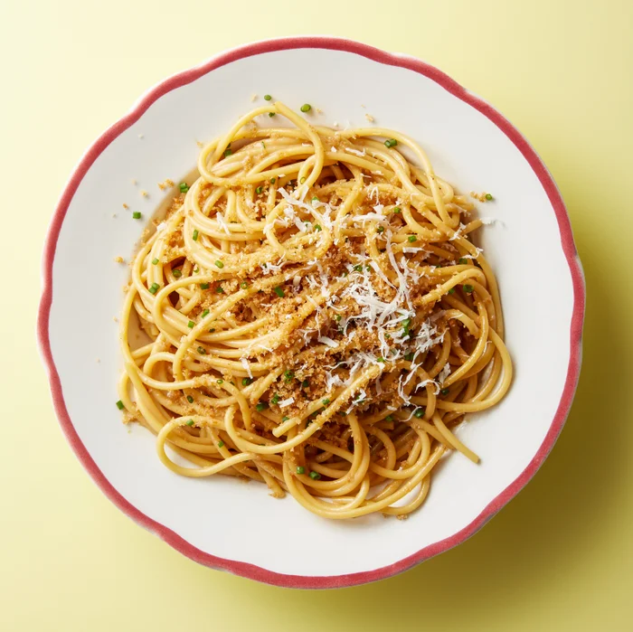
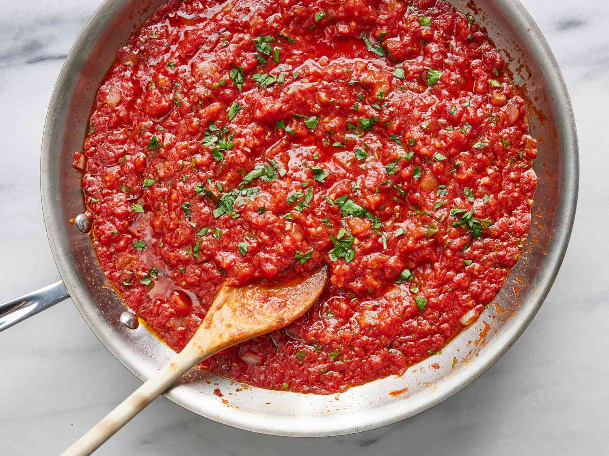
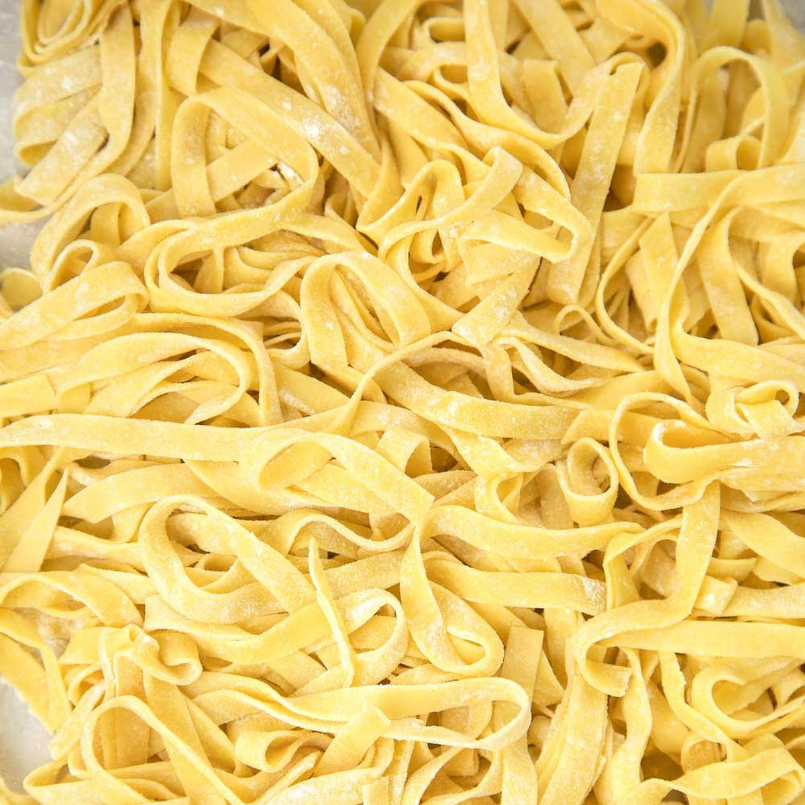

Content
Ingredients:
Spaghetti pasta: 200 grams (about 7 ounces) for 2 servings
Water: 4-5 liters (for boiling pasta)
Salt: 1-2 tablespoons (for seasoning the pasta water)
Olive oil: 1 tablespoon (optional, for the sauce or to toss pasta)
Spaghetti sauce: 2 cups (store-bought or homemade, see below for a simple homemade sauce recipe)
Instructions:
1. Boil the Pasta:
Fill a large pot with water and bring it to a rolling boil over high heat.
Once boiling, add 1-2 tablespoons of salt to the water. This helps season the pasta.
Add the spaghetti to the boiling water and stir occasionally to prevent the noodles from sticking together.
Cook according to the package instructions (usually around 8-10 minutes) or until the pasta is "al dente" (firm to the bite).
Once cooked, drain the pasta in a colander. You can save a cup of pasta water if you plan to mix it into the sauce.
2. Prepare the Sauce (Optional: If using store-bought sauce, skip this step):
Ingredients for Homemade Sauce:
2 tablespoons olive oil
1 small onion, chopped
2-3 garlic cloves, minced
1 can (14 oz) crushed tomatoes
1 teaspoon dried basil (or fresh)
1 teaspoon dried oregano
Salt and pepper to taste
1 teaspoon sugar (optional, to balance acidity)
Instructions for Sauce:
Heat olive oil in a pan over medium heat.
Add the chopped onion and cook until softened (about 5 minutes).
Add the minced garlic and cook for another 1-2 minutes, until fragrant.
Add the crushed tomatoes, basil, oregano, salt, pepper, and sugar (if using).
Let the sauce simmer for about 15-20 minutes to allow the flavors to meld together, stirring occasionally.
Taste and adjust seasonings as needed.
3. Combine the Pasta and Sauce:
Add the drained spaghetti into the sauce (or toss it in a separate bowl with the sauce).
If the sauce is too thick, add a little of the reserved pasta water to thin it to your desired consistency.
Stir to coat the pasta evenly with the sauce.
4. Serve:
Plate the spaghetti, and top with freshly grated Parmesan cheese or herbs if desired.
Optionally, drizzle a little olive oil over the top and garnish with fresh basil or parsley.
Tips:
You can customize the sauce by adding vegetables, meatballs, or even ground meat like beef or turkey for a more hearty meal.
For extra flavor, you can toast garlic or add a pinch of red pepper flakes for a spicy kick.
Pair your spaghetti with a side salad and some crusty bread for a complete meal!
Enjoy your delicious homemade spaghetti!

